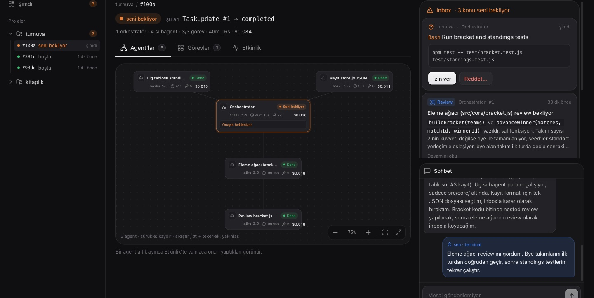

Terminalde çalış.Kararları tarayıcıdan ver.
Claude Code terminalde olduğu gibi çalışır. agent-board makinedeki bütün oturumları tek panoda toplar: kim çalışıyor, kim seni bekliyor, agent'lar ne yapıyor, görevler nereye geldi. İzinlere, kararlara ve mesajlara tarayıcıdan cevap verirsin.
$ git clone https://github.com/omerfarukdemiral/agent-board && cd agent-board && npm run setupNode 18+ ve Claude Code yeterli. Her şey senin makinende kalır.
› list komutuna --unread ekle
⏺ Edit(src/cli.js)
Do you want to make this edit to cli.js?
❯ 1. Yes
2. Yes, allow all edits this session
3. No
⎿ Allowed by PermissionRequest hook
⎿ Updated src/cli.js with 3 additions
⏺ npm test: 29 geçti, 0 başarısız
kitaplik · Orchestrator
Edit src/cli.js
+ const unread = args.includes('--unread');+ const shown = unread ? books.filter((b) => !b.read) : books;
İzin verReddet…
✓ İzin verildi
Nasıl kullanılır
-
Klonla ve bir kez kur
setuparayüzü derler veclaude-boardkomutunu PATH'e ekler.git clone https://github.com/omerfarukdemiral/agent-board ~/tools/agent-board && cd ~/tools/agent-board && npm run setup -
Board'u aç, oturumların zaten orada
Board
localhost:4317adresinde açılır. O an açık olan Claude Code oturumları, nasıl başlatılmış olurlarsa olsunlar, kurulumsuz belirir: agent'lar, görevler, sohbet ve maliyet.npm --prefix ~/tools/agent-board start -
Tam kontrol için claude-board
Projende
claudeyerineclaude-boardyaz. İzinleri ve soruları panodan cevaplar, çalışan oturuma panodan yazarsın. Açılıştaki channels uyarısını Enter ile geç.cd ~/projem && claude-board

- Agent haritası
- Orkestratör ortada, subagent'lar etrafında. Yakınlaştır, kaydır; her agent'ın durumu, o anki aracı ve maliyeti.
- Inbox
- İzin istekleri, Claude'un senin yerine verdiği kararlar ve okuman gereken notlar. Terminalden de cevaplanabilir, hangisi önce gelirse.
- Şimdi ekranı
- Bütün projeler tek bakışta: çalışanlar, seni bekleyenler, son hareket edenler.
- Görev akışı
- Yapılacak, Çalışılıyor, Review, Bitti. Her kartta işi yapan agent.